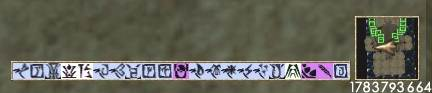
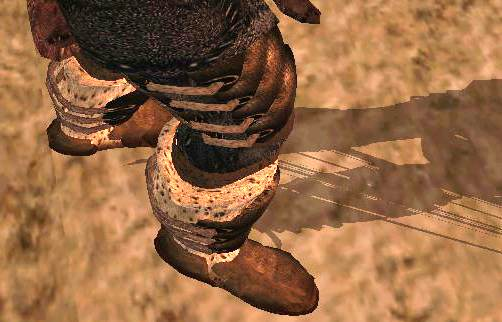
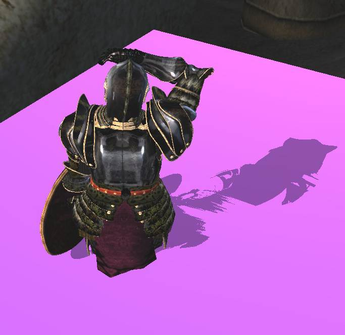

|
|||||
|
Раздел первый.
Генерал Эррор!
[general]
|
|
|
Starting Cell=
|
Стартовая ячейка.
Если включено, игра будет загружаться в обход меню.
Т.е. игрок сразу окажется в мире, что очень удобно для теста!
Обратите внимание, ГГ будет дефолтный Данмер 1 уровня!
Поэтому создайте тестовый плагин где, Player будет ... улучшен))
Т.е. в МВ.ецм файле, по умолчанию, игрок это данмер 1 левела, впрочем с рукопашным боем в 100 ед.
|
|
Starting Grid X=0
Starting Grid Y=0
|
Координаты точки выхода в Гипер.
Т.е. если игрок использует СтартингЦелл то появится в ее нулевых координатах.
Это может быть рядом с маркером дверей.
Могут использоваться для выхода в координатах Мира, либо давать дополнительное смещение в ячейке.
|
|
Show FPS=1
|
Включает датчик ФПС в углу экрана.
Как писали, в былые времена, если выключить, дает +к ФПС.
|
|
Max FPS=12000
|
Ограничитель ФПС.
Т.е. позволяет управлять максимально доступны кол-вом кадров (ака фпс)!
Если = 2. Будет слайд шоу. Т.е. игра будет выдавать именно 2 фпс!
Обычно 60-75. По умолчанию 240. Обычно это максимум что способен выжать из себя движок игры.
Уменьшение числа ФПС, на старых машинах позволяло разгрузить ЦПУ для других задач.
Т.е. значение позволяет обрезать производительность игре по числу частоты кадров монитора.
На деле не все так просто.
Поскольку чем больше фпс, тем более "мягкую" для глаз картинку можно получить.
Также, снятие порога = эффекту от разгона процессора!
Пока он в штатном режиме, все тормозит, но стоит снять блок, как ВСЕ ВЗЛЕТАЕТ! включая стабильность системы.
Если установить 99999999999999999999999 игра будет показывать отрицательное значение.
Однако, на плавность кадров это не сказывается.
В среднем, на хорошей системе (от 2012-20 года), без МВСЕ и МГЕ и тяжелых графических реплейсеров, Морровинд (в небольших ячейках) может выдавать 500-1000 фпс или еще выше.
Зависит в т.ч. от процессора и прочих параметров.
Но в больших локациях со множеством НПС, будет проседать до 30-150 фпс.
При этом, в режиме меню, фпс могут значительно возрастать.
|
|
|
"Частное мнение"(С)
Верхний порог Фпс. Чем выше тем лучше!
А если вломить более 80000000 *или чуть поменьше, можно собирать интересные глюки!
Хотя, перепады будут не менее "заметными"... если конечно у вас получится получить такое значение.
Впрочем, один раз, его реально поймали!
Но с чем это было связано, не известно, увы.
Возможно с конфликтом драйверов видеокарты, т.е. в системе была Нвидия, которую заменили на АТИ не вычищая драйверов из системы.
Скрины этого глюка.
 игра выдавала не реальный фреймрейт!
После игр с ограничением по фпс в ИНИ файле и установке значения в:
Картинка была необыкновенно гладкой, но при смене детализации в сцене, фпс резко падали до обычных 30-120.
Что создавало резкий скачок мышки.
Т.е. на пустых поверхностях были означенные цифры, но при появлении в сцене большего числа объектов, следовало резкое падение фпс.
К сожалению, за прошедшие годы, повторить подобный глюк - не получилось. Дело было не только в ограничителе фпс, но и еще в чем-то явно не связанном с настройками игры, как таковой.
|
|
|
|
|
AllowYesToAll=
1 ;0 по дефолту.
|
Позволяет пропускать ошибки плагинов пачкой.
Иначе, каждая, едва заметная ошибка будет выдавать сообщение с вопросом, что игре с этим делать.
Если нажать нет - игры вылетит на рабочий стол.
Особенно критично при установке\теста сырого и глючного плагина.
Так что, всегда держать в 1.
В прочем, все сообщения все равно, пишутся в "Warnings.txt".
Где с ними можно ознакомится после сеанса игры.
Обратите внимание, Warnings.txt перезаписывается каждый раз при запуске игры, или редактора!
|
|
|
|
|
ShowHitFader=
|
Подкрашивает экран красным если в ГГ попали чем-то тяжелым.
Т.е. кровавый сплеш скрин для наглядности урона.
Если 0, сплеш, не будет появляться.
|
|
|
|
|
Subtitles=
|
Включение или отключение в игре субтитров.
Значения: 0 = нет, 1 = Да
Т.е. каждый чих НПС будет сопровождаться оными сообщениями в стиле:
- "злобное чихание в сторону слепого\глухого\немого\калечного игрока" или как-то так.
Впрочем, позволяет играть без звука в экстремальных ситуациях.
|
|
|
|
|
AllowMultipleEditors=
1 ;0 по дефолту.
|
Позволяет запустить несколько сессий редактора из текущей папки.
Что ОЧЕНЬ полезно для моддинга.
Примечание.
Работает только локально.
Запустить второй редактор из другой папки с Морровиндом, не составит проблемы.
Однако!
Если запущено несколько редакторов, то настройки ГМСТ, будут доступны только в одном! |
|
|
|
|
Оптимизация стабильности и быстродействия.
|
|
|
|
|
|
SkipProgramFlows=
1 ;0 по умолчанию.
|
Внезапно (в 2024ом) оказалось, что этот параметр был описан не верно!
Т.е. все эти годы считалось, что он либо отвечает за работу загрузчика ячеек, либо:
Program Flow Errors are those such as videos or mod versions, not serious, but appear before the game menu. Setting to 1 will disable these errors from being reported. Default = 0.
Либо:
SkipProgramFlows is similar, for error logging for loading before the main menu
Skip = Don't do this single thing (usually from a list of steps)
When it's = 1 then it doesn't write ProgramFlow.txt log
Но на практике, благодаря внимательным Изысканиям Достопочтенного Hrnchamdа, оказалось:
Wait. I think SkipProgramFlows ini is broken
It doesn't connect to any working code in the game
The value seems to be read but it never uses it again
I think you should mark that as non-functional`
Т.е. параметр полностью не рабочий.
И его вовсе можно удалить из .ини файла!
(проверено, да, можно, игра никак на это не реагирует)
(значение =0, =1 никак не влияет на создание, заполнение ProgramFlow.txt файла в т.ч.)
|
|
|
|
|
DontThreadLoad=
1 ;0 по умолчанию.
|
Фоновая загрузка ячеек.
Отключает подгрузку текстур и ячеек в реальном времени.
Есть мнение, что:
Если =0, то возможны разные глюки, вплоть до не запуска игры.
Вероятно поэтому в те времена МВ столь изобиловал глюками...
Т.е. АИ NPС-ов и скрипты начинают работать до полной загрузки ячейки, что может приводить к ситуациями, когда скрипт пытается обратиться к еще не загруженному объекту. Что, естественно приводит к вылету игры.
Также этот параметр работает в паре с DontThreadLoad.
Hrnchamd
DontThreadLoad means "Don't thread load" (do not thread load)
so when it = 1 that means don't do this (background) thread load feature
i.e. disable loading during real time
Disables the loading of textures and cells at real time. is referring to the DontThreadLoad line
|
|
*не ясно, пишут 0 выключена, но на практике получается именно так. 0 фоновая загрузка идет. 1 сообщение о загрузке ячеек возникает в разы чаще.
|
Если включено, надпись "загрузка области" будет возникать ЗНАЧИТЕЛЬНО реже, но будет "некоторое" подергивание картинки при переходе между ячейками.
Т.е. если этот параметр включен, то экран будет дергаться как припадочный на время загрузки ячейки (если не успевает загрузить ее сходу).
Впрочем это зависит от настроек видео карты.
Если антиальязинг не включен принудительно - то будет такая картина.
Если антиальязинг включен и установлен в больше значения, загрузка будет проходить без "панического дерганья" экрана.
Но даже со включенным значением, сообщение о загрузке ячейки будет появляться!
Хотя и заметно реже.
Зависит от размера ячейки\текстур\объектов.
Также, если отключен, на видео картах АТИ при принудительно включенном антиальязинге, может приводить к возникновению яркого сплеш-скрина при переходе между ячейками!
Если лететь\идти в сторону солнца. При быстром перемещении, этот эффект крайне неприятен для глаз!
Если отключено, по идее, может повысить стабильность игры,
но сообщение о "загрузке" будет возникать чаще.
По крайней мере, так пишут, английские газеты(С)
http://en.uesp.net/wiki/Morrowind:Ini_Settings
Values: 0 = No, 1 = Yes
Параметр работает вместе с ThreadSleepTime.
В целом, для мощных систем рекомендуется к включению. Меньше сообщений о загрузке, оная проходит несколько быстрее и нет проблем с антиальязингом.
|
|
|
|
|
ThreadPriority=
|
Приоритет распределения времени процессора, для потока загрузки ячеек.
-1 низкий приоритет в потоках данных ЦПУ.
Ячейки грузятся немного дольше, но как говорят, стабильнее. Впрочем это было в ТО время.
0 - нормальный.
1 - высокий.
;возможно установить выше, хоть 100. Реакции не замечено.
Т.е. параметра влияет на приоритет потока загрузки ячеек в ОЗУ.
Как пишут те же газеты, -1 дает больше ресурсов ЦПУ, но замедляет загрузку. Увеличение приоритета, как там пишут, дает негативный результат.
Впрочем, на современных ЦПУ можно проверить и позитивные значения.
Также, может создавать проблемы со звуком.
Особенно на интегрированных звуковых картах, которые используют часть ресурсов ЦПУ для своей работы.
В случае перегрузки ЦПУ, логично, могут возникать проблемы со звуковым потоком.
Можно вспомнить.
Что МВ игра времен 1 ядерных процессоров, в то время все данных от приложений шли одним потоком, который приходилось как-то оптимизировать под разные нужды игры.
На современных процессорах эта проблема во многом перекрыта их значительными мощностями и аппаратной оптимизаций работы с данными. Отчего появилась возможность свободно экспериментировать с этим значением.
|
|
|
|
|
ThreadSleepTime=
|
Засыпание потока загрузки ячеек для экономии процессорных ресурсов.
Т.е. по видимости, дает за это время обсчитать что-то другое.
Время указано в милисекундах.
т.е. если вломить 100000 - будет фриз игры на время, за которое можно пойти посмотреть кино в соседней комнате.
Думается, что для современных ЦПУ можно ставить значение 0.1, либо 0.01.
Все одно им ресурсы девать некуда.
Т.е. чем меньше, тем быстрее будут обрабатываться потоки загрузки ячеек процессором.
Однако, как это скажется на стабильности игры, доподлинно не известно. ))
Примечания (от тов. ZWolol)
Также влияет на период обработки контроллеров анимации в моделях!
Увеличение позволяло, на слабых машинах, уменьшить дискретность анимации при перегрузке ЦПУ.
Помимо этого, это значение влияет на общую частоту обработки ячеек. т.е. все скрипты и контроллеры будут обрабатываться с заданным периодом.
----
Т.е. параметр в слишком низком значении может оказывать негативный эффект на стабильность.
И приводить к нежданным вылетам при загрузке крупных ячеек с большим кол-вом скриптов и объектов.
|
|
|
|
|
Clip One To One Float=1
Держать всегда в 1, а еще лучше использовать МСП.
|
Наглядный пример кривой заплатки кода через ИНИ файл.
Исправляет чудовищное размытие интерфейса (см. иконки в низу экрана)
Если выставить в:
0 - будет жуткий блюр.
1 - делает интерфейс более четким.
Как пишет тов. hrnchamd
Figured out what Clip One To One Float in morrowind.ini does. Turns out it's a horrible hack to correct for the half-texel offset in Direct3D which caused blurring. It still blurred things up to that half pixel depending on the location of the UI on screen and resolution, instead of applying the proper correction. UI display quality patch is meant to fix this.
Скриношоты, к сожалению не передают этого безобразия.
|
|
|
|
|
Exterior Cell Buffer=0
Что критично! т.к. игра грузит больше данных именно об этом.
Всегда устанавливайте это в НУЛЬ!
|
Настройка кэширования ПОСЕЩЕННЫХ ячеек для более быстрой загрузки в оные при возвращении туда.
Именно посещенных, а вовсе не тех, что вокруг игрока в данный момент и не тех, в направлении которых он движется!
Но именно тех, в которых игрок уже побывал!
По идее, призвано ускорить работу с файловой системой за счет кеширования ячеек в ОЗУ (или в Своп файл), т.е. игра не будет считывать данные с нуля, но обратится к "памяти" что ускорит процесс "вспоминания".
На деле, приводит к спонтанным вылетам без видимых причин, ускорению переполнения ОЗУ и иным косяками.
Если не установлен 4гб патч, а МВ нашпигована модами, сокращает время игры до невменяемых значений.
Также писали, что мол, нулевые значения приводят к исчезновению компаньонов и еще страшным и ужасным вещам - но похоже, все это сказки для хомячков, или записи о случайных багах первых лет после выхода игры.
На деле, обнуление кэша приводит к ускорению очистки памяти от всякого мусора!
Т.е. вокруг игрока всегда существует видимый им мир, но за игроком остается след из покинутых ячеек, которые уже не рендерятся, но память все одно едят. Вот чем меньше такой хвост, тем лучше!
Т.е. покинутые и не участвующие в рендере ячейки быстрее вылетают из памяти. По видимости, со всеми скриптами.
Которые начинают работать сразу при загрузке ячейки в ОЗУ, т.е. когда ГГ еще ее не увидел!
Следовательно, могут оставаться в ОЗУ до полного очищения данных о ячейке!
|
|
|
|
|
Interior Cell Buffer=0
Всегда устанавливайте это в НУЛЬ!
Примечание.
если =-1, КТД ^-^
|
Для интерьеров.
Что по сути и вовсе безсмысленно.
Т.к. они все одно будут загружаться, когда вы в них возвращаетесь.
Иначе, посещенная ячейка интерьера будет болтаться в памяти с неизвестными последствиями для стабильности.
|
|
|
|
|
Твики для управления.
|
|
|
|
|
|
Background Keyboard=
|
Отключает, или включает возможность АЛТ+ТАБ игры.
Т.е. возможность свернуть ее в трей по альт-табу.
0 - видимо разрешено, 1 - блокировано.
На деле, разницы может не быть. Т.е. сворачивание в трей работает в любом случае, впрочем может быть это какой-то локальный баг, либо дело в версии ОС.
Возможно работает только под 9х линейкой.
|
|
|
|
|
Use Joystick=
|
Включает использование джойстика вместо мыши.
Если нет джойстика, ничего не произойдет.
|
|
|
|
|
Joystick X Turns=0
|
Возможно связано с Flip Control Y=0 т.е. это все об джойстике.
Если поставить 1, отключится возможность стрейфа.
Т.е. при нажатии кнопок шаг в сторону, ГГ будет либо очень медленно поворачивать лицо, в означенную сторону, либо вовсе ничего не произойдет.
|
|
; X=1, Y = 2, Z = 3, XRot = 4, YRot = 5, ZRot = 6
|
Какие-то твики для джойстика.
|
|
|
|
|
Flip Control Y=0
|
Вероятно инверсия движения для Джойстика.
Т.к. для мыши не оказывает эффекта.
|
|
Joystick Look Up/Down=6
Joystick Look Left/Right=3
|
По идее, можно спокойно удалять, либо убирать за комментарий. ;
|
|
|
|
|
|
|
|
|
|
|
Фичи для моддинга и дебагинга.
|
|
|
|
|
|
SkipKFExtraction=1
|
Интересная штука!
Если поставить в НУЛЬ сгенерит КФ файлы для всех НИФ файлов в которых есть ЭкстраДата с указанием ключей анимации.
Также, по видимости, будут созданы и Хниф файлы.
По идее эта опция должна позволять экспортировать существа и прочая с одним только НИФ файлом, без КФ и Хниф-а.
Однако, после генерации КФов, это опцию лучше отключить.
Т.к. нет смысла повторять процесс каждый раз, как кажется.
И также в случае уже настроенных файлов, включение этого параметра, по идее, может все загубить.
По это причине особо не проверялось.
В теории, можно создавать выборочные файлы, загружая конкретное существо в редактор, или загружаясь в игры, в особую ячейку с одним только существом.
*проверяли, такой метода приводил к вылету редактора, вроде бы...
there is a trick you can do
open up the Morrowind.ini and change the line that says
SkipKFExtraction=1
change it to 0
then delete the xnif and kf versions
and load up a cell tha thas the creature in side
the game will autogenerate new xnif and kf
it might fuck up other meshes though, so backup yer meshes folder first
Уважаемый тов. G7 Greatness7 писал о проверке это:
yea
if that setting is set to 0
i tested
i deleted all the .KF files from /meshes/
then started the game
it generated them and added them to /meshes/ folder
pretty neat, time saver !
ok i tested
its from the regular .nif
it generates both .KF and xNIF
all you need is the original .nif
also
xNIF that im looking at
has no anim data
xbase_anim.NIF
base_anim.NIF has animations
but not xbase
this is good to know stuff though
it means in importer plugin I only need to worry about NIF
and not kf or xnif :smile:
altho i guess lot sof modders might not include anim data in the NIF
so nvm
|
|
|
|
|
Create Maps Enable=
; 0=no, 1 = XBox Maps, 2 = Exterior Cell Maps
|
Позволяет создать карту мира игры. И флаги для этого дела.
Собственно это скорее для модмейкеров, нежели для игроков.
Если установлено 2, то во время игры можно вызвать консоль и набрав команду:
CreateMaps "Morrowind.esm"
(или бладмун, или иной другой ЕЦМ\ЕЦП файл без разницы, т.к. облет Острова входит в обязательную программу полета.)
Можно получить глюки игры и каталог MAP в датаФайлз, где будет туча файлов разрешением 256х256 в формате бмп.
Если склеить их вместе, можно получить карту экстерьеров мастер файла.
Что было в свое время сделано для создания програмки МW-МАР. Т.е. небольшой оболочки для просмотра карты игры со всеми локациями.
Т.е. включение этой опции позволит провести аэро-фотосъемку острова.
При этом, Пипелацем будет работать ГГ, т.е. вас будет кидать последовательно по всем локациям.
Что, как правило, очень быстро приводит к вылету игры в астрал.
При этом, съемка проводится только для Экстерьера, походу картографирование помещений не входит в программу турне.
- 0 отключено.
- 1 для шайтанкоробки.
- 2 для ПК.
Т.е. всегда 2, либо 0.
|
|
|
|
|
Screen Shot Enable=
|
Включение возможности делать скрины.
По какому-то ДИКОМУ происшествию по умолчанию стоит в нуле.
Отчего и по сей день (2026ой однака) можно встретить вопросы, отчего игра не делает скриншотов... хотя конечно, уже сильно реже, чем 20 лет назад ^-^.
|
|
|
|
|
Screen Shot Base Name=
|
Задается название для ваших скринов.
Произвольно.
По умолчанию, "Screenshot" - имеет смысл сменить это дело.
|
|
|
|
|
Screen Shot Index=
|
Индекс.
Обновляется по мере создания скриншотов.
Т.е. здесь его можно обнулить. Однако не забывайте, что одноименные скриншоты имеют свойство перезаписываться.
Т.е. обнулив счетчик, смените и название серии.
Обращайте внимание, если вы редактируете ИНИ файл и при этом заходите в игру, не закрывая его, то есть шанс убить сделанные за это время скриншоты. Т.е. при сохранении не обновленного игрой ИНИ файла, номер скриншота не изменится и игра повторно сохранит файл с указанным номером.
|
|
|
|
|
Beta Comment File=BetaComment.txt
по умолчанию пусто.
|
Или MYCAMMENTS.txt к примеру.
Полезная функция для дебага плагинов.
Т.е. если указать некое название, затем зайди в игру набрать в консоли:
BC
и ткнуть мышью в некий предмет можно:
.... писать комментарии об объектах в игре.
Вы открываете консоль, кликаете на что-то и пишите комментарий, например: BC "Корень не прикреплен."
А в BetaComment.txt получается:
6/20/2004 (21:02) Morrowind.esm 5/8/2003 (21:07) Paul ex_t_root_03 Tel Vos (10,14) 85078 118468 4111 "Корень не прикреплен."
Время создания комментария, файл, где находится объект, время изменения этого файла, имя пользователя Windows, ячейка, X, Y и Z координаты объекта и, конечно, сам комментарий (информация с форумов/ ManaUser).
|
|
|
|
|
TryArchiveFirst=
;-1 Use raw data, 0 Use Newer, 1 use Archive Only
|
Приоритет считывания данных. Либо из БСА, либо из внешних папок.
Лучше держать в 0. Иначе каждый раз придется обновлять БСА архивы.
-1 - возможно только ежели распаковать все БСА архивы и удалить оные. (сильно тормозит)
1 - брать файлы только из архивов (ни каких реплейсов во внешних папках)!
0 - грузятся более новые файлы в том числе и для bsa-архивов.
т.е. ежели дата архива новее, то файлы в папке "Data Files" не будут их заменять.
В исправленном Text.dll от angel-death файле имеют высший приоритет над архивами в любом случае.
Есть небольшая особенность:
файлы грузятся из архива не по одному, а блоками (по несколько сразу, сколько влазит в буфер загрузки). В результате при совпадении имен в разных архивах может иногда загрузиться старый файл.
Что, видимо и приводит к багам:
Collision Between и, возможно, "синему цвету".
|
|
|
|
|
|
|
|
Аудио.
|
|
|
|
|
|
Disable Audio=0
|
Отключает игровые звуки.
Т.к. музыка может все одно прорываться.
В ряде случаев позволяет запустить игру на машине без звуковой карты.
Т.к. МВ очень критично воспринимает не возможность проиграть музыку.
Радостно заявляя об этому уже в мире игры и закрываясь.
=1 иногда может помочь.
Впрочем, все скрипты работающие через детектирование звуков, улетят в хаос. Т.е. будут обрабатываться постоянно.
Поэтому, лучше не ставить этот флаг в 1, кроме очень РЕДКИХ случаев.
Также, в былые времена, писали, мол отключение Аудио - повышает ФПС и общее быстродействие игры.
Примечание.
Однако, если переглючил драйвер звуковой карты (что иногда бывает на Creative) установка значение в НУЛЬ, не поможет.
Игра все равно будет ругаться на невозможность проиграть ExploreXX.mp3 и вылетать при загрузки мира после этого сообщения!
Лечится, перезагрузкой драйвера через его панель управления, либо перезагрузкой ОС.
|
|
|
|
|
PC Footstep Volume=0.7 ;0.0 - 1.0
|
Громкость топота игрока при движении.
Влияние на обнаружение игрока Неписями, не известно.
|
|
|
|
|
Werewolf FOV=100
|
Управляет обзором оборотня.
;Alters FOV for a werewolf, defaults to 100. Delete this line if you do not have Bloodmoon.
|
|
|
|
|
Тени.
|
То что лучше никогда не включать!
|
|
|
|
|
Вот эти разделы работают совместно и именно они отвечают за общее допустимое кол-во теней на экране.
Сколько и от скольких источников света их будет!
Number of Shadows= общее кол-во допустимых теней в кадре.
Maximum Shadows Per Object= общее кол-во допустимых источников света от которых будут отбрасываться тени.
Т.е. если:
Number of Shadows= 1
Maximum Shadows Per Object= 5
То в сцене будет только одна тень от ближайшего к игроку источника света.
Но если:
Number of Shadows= 5
Maximum Shadows Per Object= 5
То уже 5 теней будет на экране, от 5 источников света!
Если есть желание убить фпс за ради принципа, то можно сделать так:
Number of Shadows= 255
Maximum Shadows Per Object= 255
Конечно в сцене должно быть 255 фонариков, иначе особого проку не будет.
Т.е. по идее правильно делать, что кол-во теней = кол-ву допустимых источников света.
Если:
Number of Shadows= 5, то и Maximum Shadows Per Object=5
Надо полагать, что тени работают "от игрока".
Т.е. ближайшие к игроку объекты будут получать тени от ближайших же к игроку источников света.
Если указано:
Number of Shadows= 1
Maximum Shadows Per Object= 1
То тень будет только у игрока в любом случае.
Что в интерьере с одним игроком, что в Кальдере со множеством НПС.
Проще, никто кроме игрока не будет получать тень, если игрок пользует вид от 3его лица.
Если от 1го, то тень будет у ближайшего к игроку НПС, или существа.
По видимости, в экстерьерах тень, в основном, учитывается только от одного, глобального источника освещения.
Т.е. в экстерьерах основным генератором тени служит источник глобального освещения ячейки.
И редко какой объект попадает под действие нескольких локальных источников.
Примечание.
Еще можно заметить, что при включенном параметра HighDetailShadow=1 модель теней начинает распадаться на линии очень быстро!
Т.е. есть лимит на кол-во полигонов и он много ниже, чем для обычных сеток. Сетка (шейп) без скина = 65к треугольников до распада видимой сетки на "куски".
Сетка со скинингом = 15к треугольников до распада.
Сетка со скинигом в режиме отбрасывания тени - (вероятно) в два раза ниже.
Т.е. локальный пример модели (сапог со скинингом) в 12к треугольников, стабильно работает в обычном режиме.
Но стоит включить "highDetailShadow", как тени от сапог превращаются в ту грелку, с которой поиграл Тузик.
Впрочем, может быть, это связано с настройками траффаретов, который включают отображение обоих двух сторон поверхности объекта.
Что (возможно) и приводит, к фактическому удвоению полигонов на объекте.
 Собственно пример, сами сапоги отображаются корректно, но вот их тень "порезало на макароны".
Выдержка из древнего описания этого параметра (аглицкая)
;Causes shadow corruption and extreme video glitching on some systems. ;Uses a more detailed mesh for projecting the shadow geometry but can glitch, which causes extreme slowness.
;DO NOT use this with Better Bodies or any other high-detail body replacer. The game has to calculate a catastrophic
;number of vertexes per shadow, resulting in incredible slow-downs even on an extremely powerful multicore system.
;Why? Because the shadow projection engine really sucks.
;DO NOT SET THIS TO 1! Even a six core Intel Core i7 at 3.6 GHz with dual HD5850 video cards is not enough to deliver
;more than ten frames per second.
Для истории вопроса, так сказать. :)
| |
|
Number of Shadows=6
|
Если в игре включены тени, тут можно указать их кол-во.
Т.е. сколько теней будет отброшено в целом.
Т.е. по умолчанию включено использование только 6 теней.
Вероятно надо читать, что только у 6 объектов (нпс и существа) будут отбрасываться тени.
|
|
|
|
|
Maximum Shadows Per Object=1
|
Поправка к старым версиям заметок!
Это не кол-во теней которое создает источник света. Это кол-во активных источников света которые будут создавать тени!
Т.е. если в сцене есть 10 фонариков но здесь указано 1; - только один источник света, ближайший к игроку, будет создавать тени.
Если указано 5;
- то уже 5 источников будут учитываться, создавая ХХ теней. Кол-во указывается параметром выше.
Если там стоит 1, то только один фонарик будет работать и только для одного объекта.
|
|
|
|
|
High Detail Shadows=0
|
Включает "реалистичные тени" берущие геометрию по видимой модели.
Т.е. отключает оптимизацию работу с тенями.
Отчего игра начинает АЦЦКИ тормозить и очень скоро получает краш2десктоп.
Никогда не включайте это, особенно если установлены графические плагины!
 получается что-то в этом роде. |
|
|
|
|
shadow volume=5
shadow overlay=5
|
Не официальные команды, так сказать. Они есть в потрохах игры, но в ини файле они не указаны.
Т.е. если записать их сюда, можно получить некоторые дополнительные эффекты для теней.
Например мерцание оных, т.е. тень будет менять "яркость".
Цифра 5, видимо указывает степени и кол-во мерцаний.
В данном случае указано произвольно.
Но насколько это точно, вопрос открытый...
Т.е. был замечен такой результат, но что на самом деле должны делать эти параметры, точно не известно.
В графиках сцены (SSG) есть такие разделы, но влияние на оные из ИНИ файла, не отмечалось.
Впрочем, это не тестировалось особо тщательно (по очевидной мало актуальности).
|
|
|
|